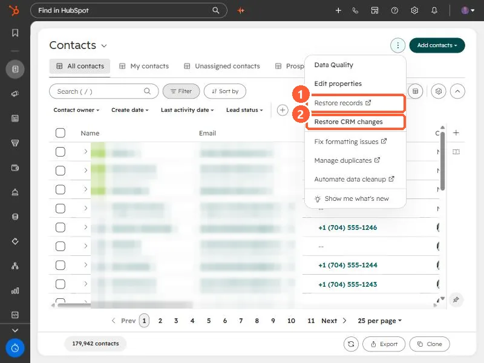

Short answer
From an object's index page, open the actions menu and choose Restore records. HubSpot's KB says you can restore records up to 90 days after deletion, filtering by date, user, or the workflow that deleted them, and up to 10,000 records show at a time. A contact cannot be restored if an active contact already uses its email. Permanent and GDPR deletions are not held for restore.
1. The menu
The contacts actions menu in my demo portal, which also has Restore CRM changes.


2. After a workflow deleted them
Turn the workflow off first, or the restored records can be deleted again.
3. Related
Restoring activities and backup and restore.